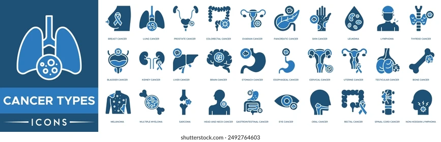
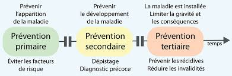

Qu’est-ce que le cancer ?
Le cancer est une maladie dans laquelle certaines cellules du corps se développent de manière anormale et incontrôlée.
Ces cellules anormales peuvent former une masse appelée tumeur. Certaines tumeurs sont bénignes, d’autres malignes et peuvent envahir d’autres parties du corps.
Symptômes du cancer
- Perte de poids inexpliquée
- Fatigue persistante
- Douleurs ou masses anormales
- Saignements inhabituels
- Changements cutanés
Causes possibles

- Facteurs génétiques
- Tabagisme
- Exposition aux UV
- Pollution
- Alimentation déséquilibrée
Prévention

- Alimentation saine
- Activité physique régulière
- Éviter le tabac et l’alcool
- Dépistages réguliers
- Protection solaire